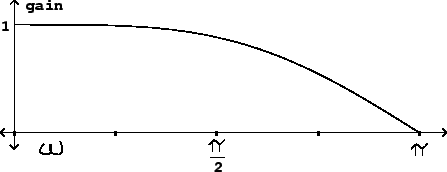

Since they are in effect doing wavetable lookup, variable delay lines introduce distortion to the signals they operate on. Moreover, a subtler problem can come up even when the delay line is not changing in length: the frequency response, in real situations, is never perfectly flat for a delay line whose length is not an integer.
If the delay time is changing from sample to sample, the distortion results of
Section 2.5 apply. To use them, we suppose that the
delay line input can be broken down into sinusoids and consider separately what
happens to each individual sinusoid. We can use Table 2.1
(Page  ) to predict
the RMS level of the combined distortion products for an interpolated
variable delay line.
) to predict
the RMS level of the combined distortion products for an interpolated
variable delay line.
We'll assume here that we want to use four-point interpolation. For sinusoids with periods longer than 32 samples (that is, for frequencies below 1/16 of the Nyquist frequency) the distortion is 96 dB or better--unlikely ever to be noticeable. At a 44 kHz. sample rate, these periods would correspond to frequencies up to about 1400 Hertz. At higher frequencies the quality degrades, and above 1/4 the Nyquist frequency the distortion products, which are only down about 50 dB, will probably be audible.
The situation for a complex tone depends primarily on the amplitudes and frequencies of its higher partials. Suppose, for instance, that a tone's partials above 5000 Hertz are at least 20 dB less than its strongest partial, and that above 10000 Hertz they are down 60 dB. Then as a rough estimate, the distortion products from the range 5000-10000 will each be limited to about -68 dB and those from above 10000 Hertz will be limited to about -75 dB (because the worst figure in the table is about -15 dB and this must be added to the strength of the partial involved.)
If the high-frequency content of the input signal does turn out to give unacceptable distortion products, in general it is more effective to increase the sample rate than the number of points of interpolation. For periods greater than 4 samples, doubling the period (by doubling the sample rate, for example) decreases distortion by about 24 dB.
The 4-point interpolating delay line's frequency response is nearly
flat up to half the Nyquist frequency, but thereafter it dives quickly.
Suppose (to pick the worst case) that the delay is set halfway between two
integers, say 1.5. Cubic interpolation gives:
|  |
As with the results for distortion, the frequency response improves radically with a doubling of sample rate. If we run our delay at a sample rate of 88200 Hertz instead of the standard 44100, we will get only about 1 dB of roll-off all the way up to 20000 Hertz.